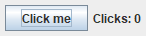
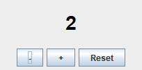
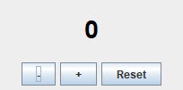

16.1 Event source และ listener
ลำดับเหตุการณ์เมื่อผู้ใช้คลิกปุ่ม
ผู้ใช้คลิกปุ่ม
│
▼
ระบบปฏิบัติการ → JVM → EDT สร้าง ActionEvent
│
▼
JButton (source) เรียก listener ทุกตัวที่ลงทะเบียนไว้
│
▼
actionPerformed(ActionEvent e) { ...โค้ดของเรา... } ← ทำงานบน EDT
│
▼
เราเปลี่ยนข้อความ label → Swing วาดหน้าจอใหม่ตัวอย่าง 16.1.1 · ปุ่มแรกที่ทำงาน: นับจำนวนคลิก พื้นฐาน
แนวคิด: เรียก addActionListener กับปุ่ม และส่งโค้ดที่ต้องทำเมื่อคลิก (ในรูป lambda) — ตัวนับเก็บใน field เพราะต้องจำค่าข้ามการคลิก
Java source · ClickCounter.java
import javax.swing.*;
public class ClickCounter {
private static int count = 0;
public static void main(String[] args) {
SwingUtilities.invokeLater(() -> {
JFrame frame = new JFrame("Counter");
frame.setDefaultCloseOperation(JFrame.EXIT_ON_CLOSE);
JLabel label = new JLabel("Clicks: 0");
JButton button = new JButton("Click me");
button.addActionListener(e -> {
count++;
label.setText("Clicks: " + count);
});
JPanel panel = new JPanel();
panel.add(button);
panel.add(label);
frame.add(panel);
frame.pack();
frame.setVisible(true);
});
}
}หน้าต่างที่ได้ (ภาพจากโปรแกรมจริง)
เริ่มต้น

หลังคลิก 3 ครั้ง
อธิบายทีละขั้น
addActionListener(e -> { ... })ลงทะเบียนโค้ดไว้กับปุ่ม — ยังไม่ทำงานตอนนี้- main จบ หน้าต่างรอเหตุการณ์
- ทุกครั้งที่คลิก โค้ดใน lambda ทำงาน: เพิ่ม count แล้วเปลี่ยนข้อความ label
- count ต้องเป็น field (ไม่ใช่ตัวแปร local) เพราะ lambda แก้ตัวแปร local ไม่ได้ และค่าต้องคงอยู่ระหว่างการคลิก
ตัวอย่าง 16.1.2 · หลายปุ่ม หลาย listener ต่อยอด
แนวคิด: แต่ละปุ่มมี listener ของตัวเอง ทุก listener แก้ state ชุดเดียวกัน (value) แล้วเรียกเมธอดอัปเดตหน้าจอ
Java source · StepperApp.java
import javax.swing.*;
import java.awt.*;
public class StepperApp {
private static int value = 0;
private static JLabel display;
public static void main(String[] args) {
SwingUtilities.invokeLater(StepperApp::createGui);
}
private static void createGui() {
JFrame frame = new JFrame("Stepper");
frame.setDefaultCloseOperation(JFrame.EXIT_ON_CLOSE);
display = new JLabel("0", SwingConstants.CENTER);
display.setFont(new Font("SansSerif", Font.BOLD, 28));
JButton minus = new JButton("-");
JButton plus = new JButton("+");
JButton reset = new JButton("Reset");
minus.addActionListener(e -> { value--; refresh(); });
plus.addActionListener(e -> { value++; refresh(); });
reset.addActionListener(e -> { value = 0; refresh(); });
JPanel buttons = new JPanel();
buttons.add(minus);
buttons.add(plus);
buttons.add(reset);
frame.add(display, BorderLayout.CENTER);
frame.add(buttons, BorderLayout.SOUTH);
frame.setSize(220, 140);
frame.setVisible(true);
}
private static void refresh() {
display.setText(String.valueOf(value));
display.setForeground(value < 0 ? Color.RED : Color.BLACK);
}
}หน้าต่างที่ได้ (ภาพจากโปรแกรมจริง)
หลัง + สามครั้ง และ − หนึ่งครั้ง

หลังกด Reset

อธิบายทีละขั้น
- state ของโปรแกรมคือ value ตัวเดียว
- ทุก listener เปลี่ยน state แล้วเรียก refresh()
- refresh() เป็นจุดเดียวที่อัปเดต UI จาก state — ทำให้หน้าจอตรงกับข้อมูลเสมอ
- ค่าลบแสดงเป็นสีแดง
ลองคิดก่อน · เมื่อไรโค้ดทำงาน
JButton b = new JButton("Go");
b.addActionListener(e -> System.out.println("clicked"));
System.out.println("listener added");ข้อความใดถูกพิมพ์ก่อน และ “clicked” ถูกพิมพ์เมื่อไร
ดูคำตอบ
“listener added” พิมพ์ทันที ส่วน “clicked” พิมพ์ ทุกครั้งที่ผู้ใช้คลิกปุ่ม (อาจไม่พิมพ์เลยถ้าไม่มีใครคลิก)